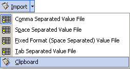
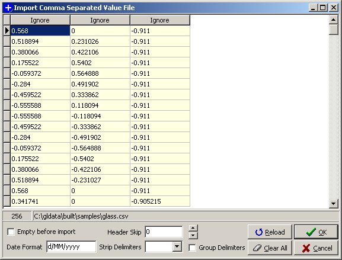
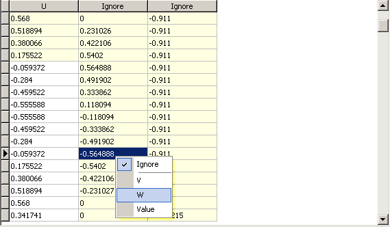

Import Module
Introduction
In glData there is a data grid on the Original tabsheet. Data may be entered in manually, on a record-by-record basis, however this can prove to be a time consuming process.
An import module was developed to allow for data transfer into the data grid from one of a number of different sources.
Types of Data to Import
The import module allows importing data from the following "sources":
- Comma Separated Value File
- Tab Separated Value File
- Space Separated Value File
- Fixed Format (Space Separated Value) File
- Clipboard

General Procedure
Regardless of the source type to import the basic procedure is the same.
- Specify the source type.
- Assign import columns to destination grid field.
- Specify the number of header rows to omit.
- Specify options for delimiter removal.
- Accept data for transfer to program grid.
- Return to step 2. if there are any records that have failed to import.

Specify the Source Type
The import module is accessed from a button in glData, as shown below, with a drop-down list of available data types. The current import data type is shown checked, in this instance it is the Comma Separated Value File. The highlighted entry is the one about to be selected using the mouse. Once a data type is selected the appropriate file browser dialog will be displayed.
|  |
| Figure 1. Import Module Type Menu |
At the same time the selected data type is set as the default setting.
As an alternative to selecting from the menu you can click the "Import" button directly. This will activate importing for the current default data type. The fly-over hint ("tooltip") will identify the default type.

Assigning Columns To Fields
On selecting a file the main import form will open with the data written column by column to a general alphanumeric grid, in file column order. If there are no saved settings, i.e. the first time the import module has been run, the grid has the option Ignore in each column header. If save settings are detected the saved column headers and order are preloaded for convenience. Figure 2 shows the import module main form with all columns set to Ignore.
Note that in the grid cells that are highlighted (light yellow by default) will not be parsed into the source grid.
The number of columns is determined by the number of columns in the clipboard or text files. For file importing (comma, tab, space, fixed formatting) the file is read once and the maximum number of columns is determined. If there are more columns than in the defined import grid for the node then additional Ignore columns will be generated. Likewise if there are fewer columns the number of displayed fields will be reduced.
As the import grid is alphanumeric there is no checking done on the data as it is entered into the grid from the file source.
|  |
| Figure 2. Import Module Main Form |
Column-Field Specification
To specify columns and their order, a popup menu can be accesed either by:
- Left clicking on the column heading OR
- Right clicking in the values of the column
In Figure 3, the first column has been associated with the "U" field in the destination table. We are about to assign the second column to the "W" field by right clicking on a value and selecting "W" from the list. Note that the header-skip value has been set to 4 in this instance so the first 4 rows of the grid are highlighted.
|  |
| Figure 3. Associating a Column |

Specify the Header Rows to Omit

Specify Options for Delimiter Removal

Accept Data for Transfer to Program Grid

Review any Erroneous Records